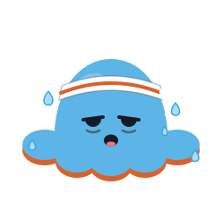

Well done!
“Worth it. Probably.”
Lower body strength
Sat 24 Oct · 18:05
17 of 18 sets done in 38:24 · 1 skipped
Time38:24
Sets17
Lifted2.1 t
Tentacle 7 lit!
One more and Poulpy is a champion.

“Worth it. Probably.”
Lower body strength
Sat 24 Oct · 18:05
17 of 18 sets done in 38:24 · 1 skipped
One more and Poulpy is a champion.